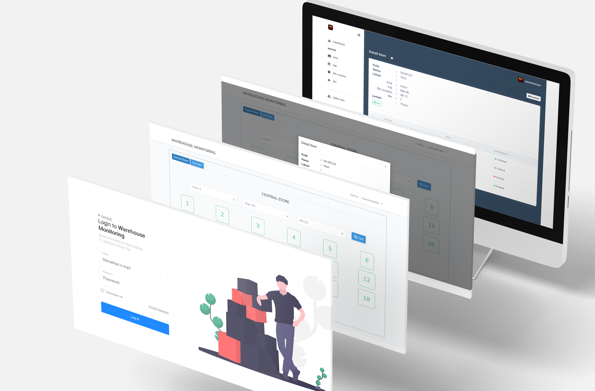
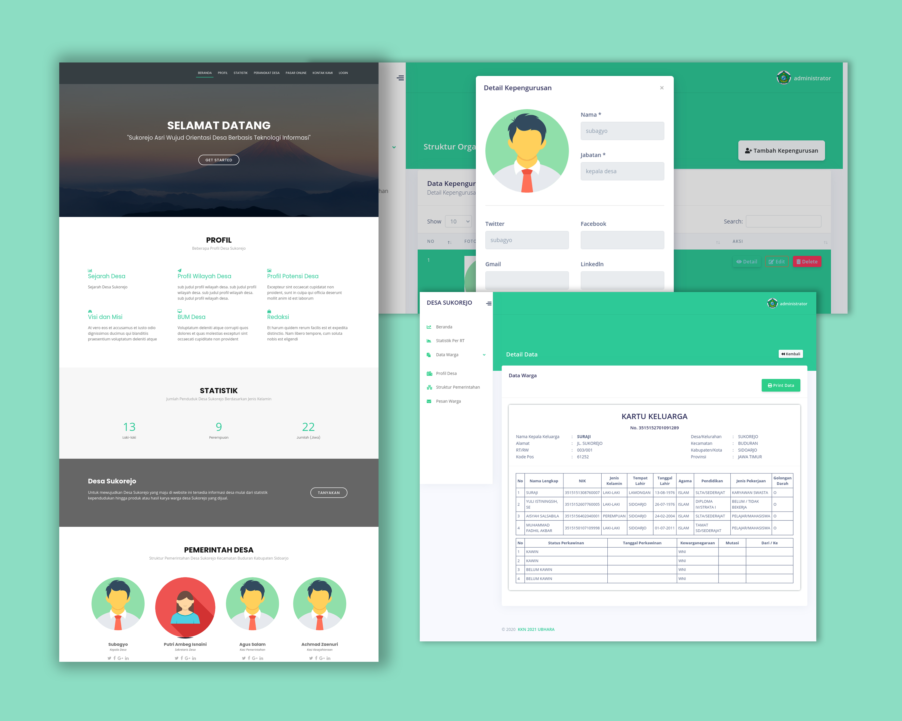
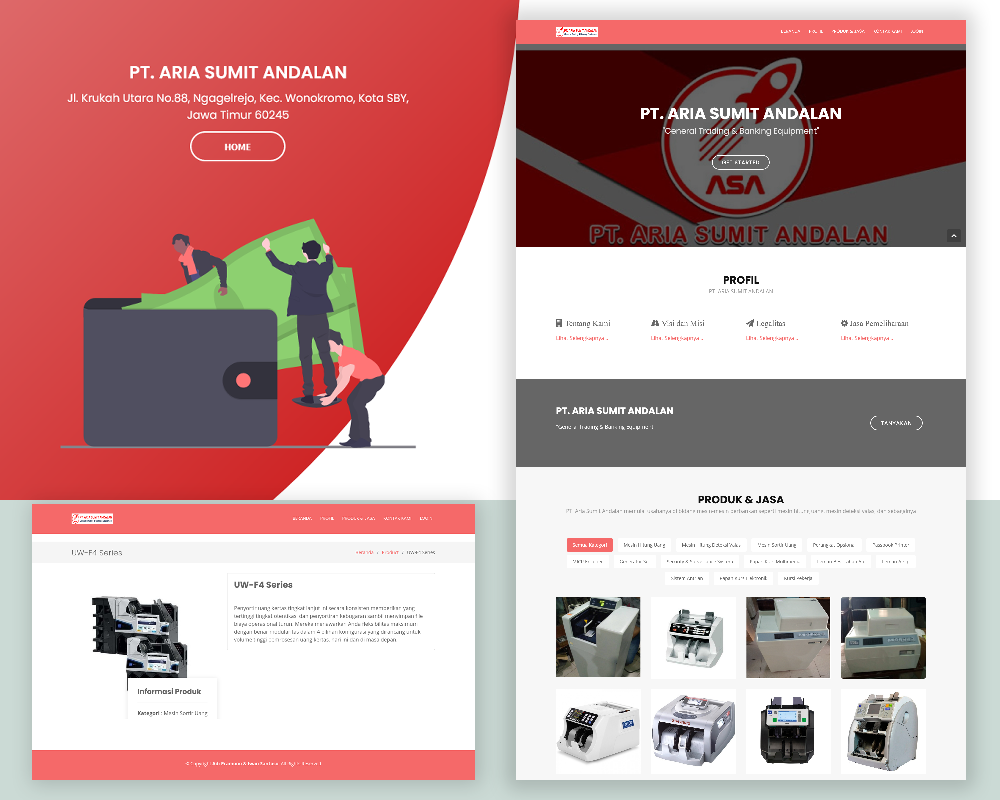

Adi Pramono
W E B P R O G R A M M E R
Web Programmer & IT Support with experience in developing and maintaining internal web-based systems, API integration, and managing company network infrastructure. Skilled in application and network troubleshooting, developing features based on business needs, and ensuring system stability to support operational efficiency. Successfully optimized and repaired office network infrastructure using Mikrotik within the first year of employment.
Inventory System
Laravel 5.8 MySql[2021] Used to record incoming and outgoing stock movements. Two accounts are available: Admin and Warehouse staff.


Village Profile
CodeIgniter 3 MySql[2020] Contains village profiles and products. The dashboard displays profiles, village officials, and residents' products. Users can contact product owners directly via the WhatsApp link provided. There are two roles: Village Official and Online Store Admin.
Company Profile
CodeIgniter 3 MySql[2020] Contains the company's profile and products sold. The admin user is used to manage the company's products displayed on the website.
